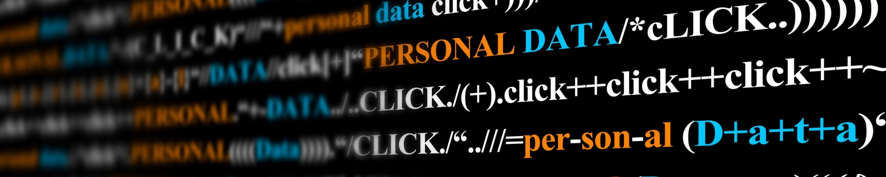
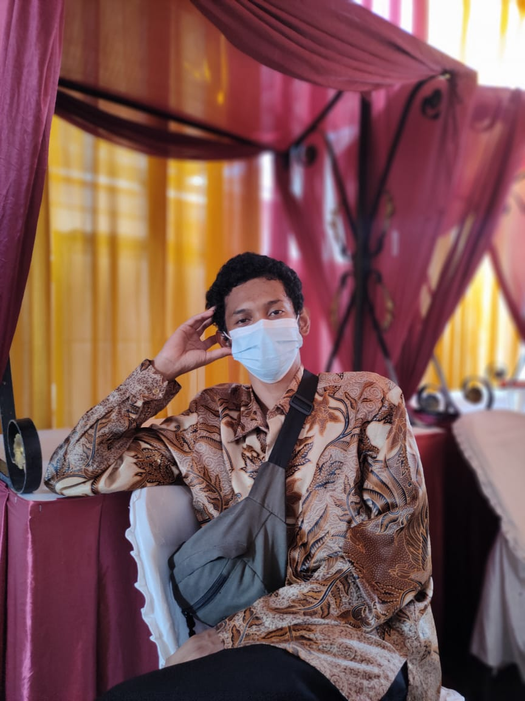

Personal Info
Nuriansyah Rizki
Mahasiswa RPL UPI Cibiru

Lahir di Kota Bandung pada tanggal 19 September 2001, golongan darah A, beragama Islam.
Bersekolah di SDN 263 Rancaloa Kota Bandung dari 2007 sampai 2013, SMPN 34 Bandung dari 2013 sampai 2016, dan SMKN 3 Bandung Jurusan Akuntansi dari 2016 sampai 2019.
Kini sedang menuntut ilmu di Universitas Pendidikan Indonesia Kampus Daerah Cibiru Program Studi Rekayasa Perangkat Lunak sejak tahun 2021.
Mempunyai beberapa skill akuntansi, perpajakan, dan perkomputeran. Berminat sebagai web developer suatu hari nanti.